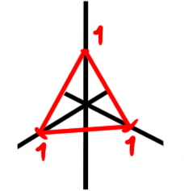
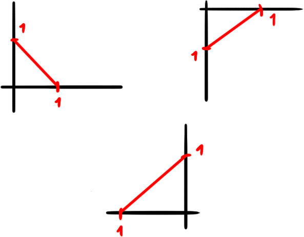

Invariantes e Homologia
Invariantes
No curso sobre o grupo fundamental e sobre espaços de recobrimento, aprendemos sobre como definir um importantíssimo invariante topológico, ou seja, uma propriedade sobre espaços preservada por homeomorfismos. Acontece que existem muitos outros invariantes e, em particular, dois destes serão muito úteis para nós, portanto vamos estudá-los com mais detalhe: os grupos de homologia e os grupos de cohomologia. Porém, antes de chegarmos neles, vamos passar rapidamente por outros invariantes que aparecem na natureza para estimular a curiosidade e perceber que a matemática é de fato bem maior do que aparenta.
Definimos o grupo fundamental $\pi_1(X, x_0)$ como uma coleção de caminhos fechados com ponto-base $x_0$ ou de mapas $\gamma \colon \mathbb{S}^1 \to X$ tais que $x_0 \in \textrm{Im }\gamma$ (lembrando que existe uma correspondência entre ambos os conceitos, que foi vista também no curso sobre o assunto). De maneira análoga podemos definir os outros grupos de homotopia, que são grupos que se comportam de maneira similar ao grupo fundamental.
Se $X$ é um espaço qualquer, dado $x_0 \in X$ defina $\pi_n(X, x_0)$ como sendo o quociente $C/\sim$, onde $C$ é o conjunto de todos os mapas $f \colon \mathbb{S}^n \to X$ tais que $x_0 \in \textrm{Im }f$ e $\sim$ é a relação de homotopia. Esses conjuntos são grupos com as operações corretas e também são preservados por homeomorfismos. Existem relações entre esses grupos e definições precisas, que não serão abordadas neste curso.
Será que podemos generalizar ainda mais essa construção? Bem, existe uma classe de espaços que engloba todos os espaços da forma $\mathbb{S}^n$, que são as variedades. De fato, dada $M$ uma variedade $n-$dimensional, $X$ um espaço qualquer e $x_0 \in X$, podemos definir os
Preparativos Formais
Um dos principais invariantes topológicos que serão estudados neste curso é a homologia singular, porém, antes de construirmos uma definição precisa para esta, precisamos estabelecer algumas outras definições. Definimos a envoltória convexa $[M]$ de um conjunto $M \subset \mathbb{R}^n$ como sendo o menor conjunto $C$ convexo tal que $M \subset C$. Explicitamente, podemos escrever $[M] = \bigcap_\mathcal{C} C$, onde $\mathcal{C} = \{C \subset \mathbb{R}^n \colon M \subset C, C$ é convexo$\}$. Se $e_0, \dots, e_n$ é a base canônica de $\mathbb{R}^{n+1}$, então definimos o $n-$simplexo $\Delta^n$ como sendo a envoltória convexa de $\{e_0, \dots, e_n\}$, ou melhor dizendo, $[e_0, \dots, e_n]$. Explicitamente, podemos escrever $\Delta^n = \{(x_0, \dots, x_n) \in \mathbb{R}^{n+1} \colon \displaystyle\sum_{i=0}^{n} x_i = 1$ e $x_i \geq 0\}$.
Os $4$ primeiros simplexos.
Defina o $n-$ésimo grupo de cadeia singular $\mathcal{C}_n^{\textrm{sing}}(X)$ como sendo $\textrm{Free}_{\textrm{Ab}}(\sigma \colon \Delta^n \to X \mid \sigma$ é contínuo$)$. Chamaremos um mapa $\sigma \colon \Delta^n \to X$ de $n-$simplexo singular. A palavra "singular" no nome do mapa vem deste não ser necessariamente injetor, pois isso faz com que possamos ter singularidades, como a que está no desenho abaixo.
O mapa neste caso pega um segmento ligando duas das arestas de $\Delta^2$ e o leva para apenas um ponto, criando a singularidade.
Um elemento de $\mathcal{C}_n^{\textrm{sing}}(X)$ é uma $n-$cadeia singular. Uma parte importante é perceber que essa construção é um funtor da categoria $\textrm{Top}$ na categoria $\textrm{AbGrp}$. É interessante perceber também que ele é de certa forma mais "geral" que o funtor grupo fundamental, pois não precisamos fixar pontos nos espaços.
Proposição 01: $\mathcal{C}_n^{\textrm{sing}} \colon \textrm{Top} \to \textrm{AbGrp}$ é um funtor.
Demonstração: dado $X$ um espaço topológico, já conhecemos $\mathcal{C}_n^{\textrm{sing}}(X)$. Agora, dada uma função contínua $f \colon X \to Y$, definimos $\mathcal{C}_n^{\textrm{sing}}(f) \colon \mathcal{C}_n^{\textrm{sing}}(X) \to \mathcal{C}_n^{\textrm{sing}}(Y)$ por $\mathcal{C}_n^{\textrm{sing}}(f)(\sigma) = f \circ \sigma$.
Note que $\mathcal{C}_n^{\textrm{sing}}(Id_X)(\sigma)$ $=$ $Id_X \circ \sigma$ $=$ $\sigma$ e portanto $\mathcal{C}_n^{\textrm{sing}}(Id_X)$ $=$ $Id_{\mathcal{C}_n^{\textrm{sing}}(X)}$. Além disso, como $(f \circ g) \circ \sigma$ $=$ $f \circ (g \circ \sigma)$, temos que $\mathcal{C}_n^{\textrm{sing}}(f \circ g)$ $=$ $\mathcal{C}_n^{\textrm{sing}}(f) \circ \mathcal{C}_n^{\textrm{sing}}(g)$. Basta mostrarmos que $\mathcal{C}_n^{\textrm{sing}}(f)$ é morfismo de grupos.
Se $\alpha, \beta \in \mathcal{C}_n^{\textrm{sing}}(X)$, então $\alpha = \sum_{i=0}^n \alpha_i \sigma_i$ e $\beta = \sum_{j=0}^m \beta_j \lambda_j$. Assim, temos $\mathcal{C}_n^{\textrm{sing}}(f)(\alpha + \beta)$ $=$ $\mathcal{C}_n^{\textrm{sing}}(f)(\sum_{i=0}^n \alpha_i \sigma_i + \sum_{j=0}^m \beta_j \lambda_j)$ $=$ $\sum_{i=0}^n \alpha_i (f \circ \sigma_i) + \sum_{j=0}^m \beta_j (f \circ \lambda_j)$ $=$ $\mathcal{C}_n^{\textrm{sing}}(f)(\alpha) + \mathcal{C}_n^{\textrm{sing}}(f)(\beta)$. $\blacksquare$
Para cada $n \geq 1$, se $V_i$ é a envoltória $[v_0, \cdots, v_{i-1}, v_{i+1}, \cdots, v_n]$ temos o morfismo de fronteira, que é um morfismo de grupos $\partial_n \colon \mathcal{C}_n^{\textrm{sing}}(X) \to \mathcal{C}_{n-1}^{\textrm{sing}}(X)$ dado por $\sigma \mapsto \sum_{i=0}^n (-1)^i \sigma|_{V_i}$. Perceba primeiramente que cada $V_i$ é de fato um $(n-1)-$simplex, pois podemos identificar $\Delta^{n-1}$ com $V_i$ pelo isomorfismo linear que preserva a ordem dos vértices. Por exemplo, se $n = 1$ temos que o $2-$simplexoé o triângulo equilátero, cujas faces são todas $1-$simplexos.
Aqui, um $2-$simplexosó que com apenas as faces, sem o interior. Perceba como cada face pode ser vista com um $1-$simplexoem seus respecitvos planos.
Faces do $2-$simplex.
Assim, o mapa está bem definido (no sentido de que a imagem de cada mapa $\sigma$ de fato é um elemento de $\mathcal{C}_{n-1}^{\textrm{sing}}$).
Lema 02: $\partial_{n-1} \circ \partial_{n} = 0$.
Homologia Singular
Um complexo de cadeias é uma sequência de $R-$módulos $\cdots, A_{-1}, A_{0}, A_1, \cdots$ conextados por morfismos chamados de morfismos de fronteira (nome familiar, não?) da seguinte forma:
Além disso, pedimos que $d_{n-1} \circ d_n = 0$ ou, equivalentemente, que $\textrm{Im } d_n \subset \ker d_{n-1}$.
Perceba que como todo grupo abeliano é um $\mathbb{Z}-$módulo, para cada espaço topológico $X$ associamos um complexo de cadeia: